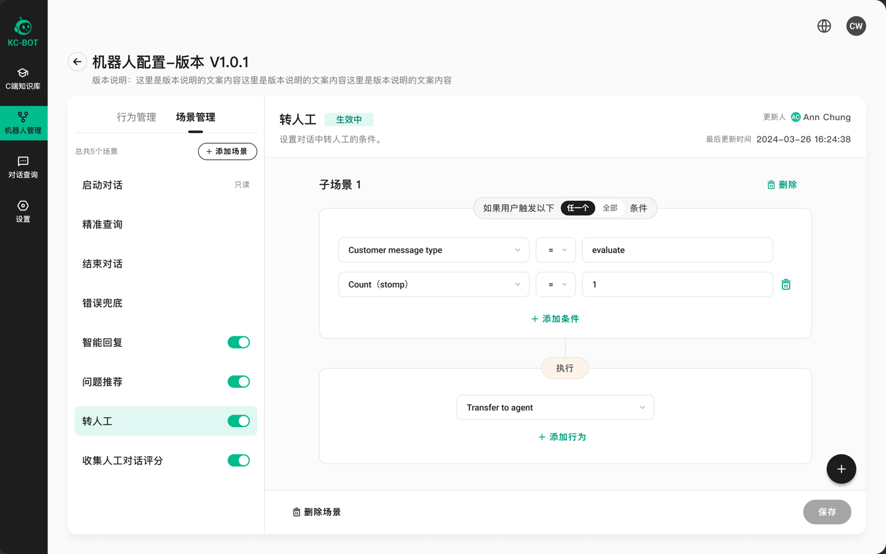
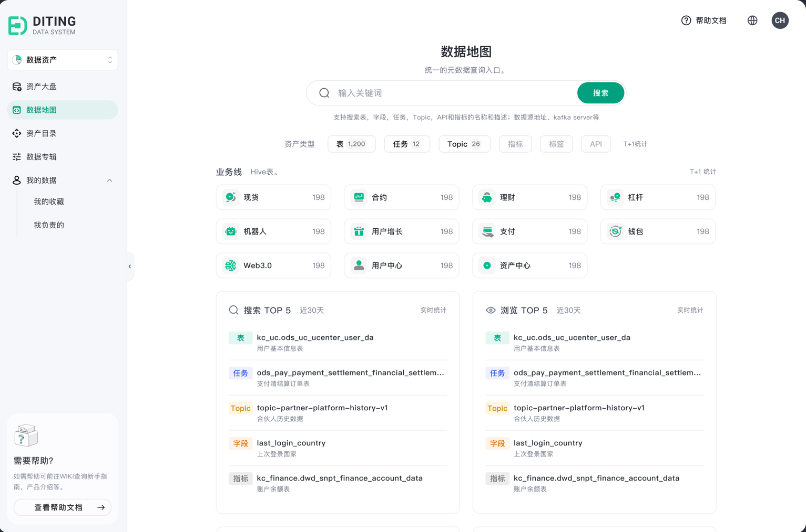
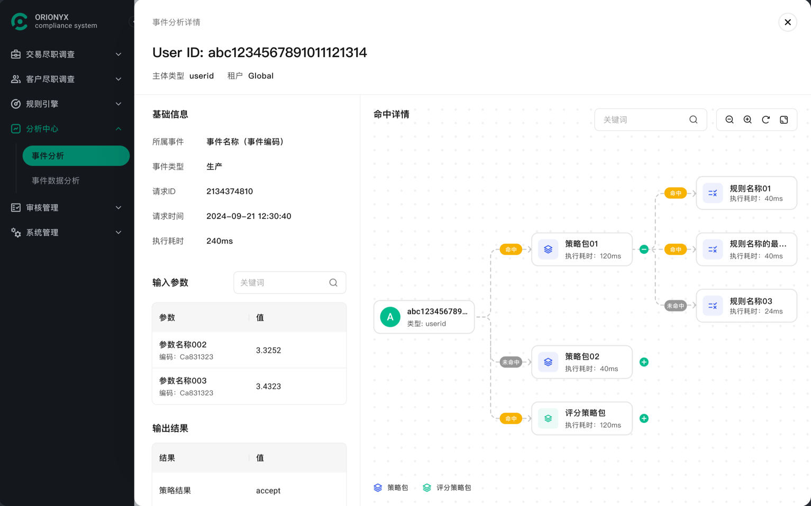
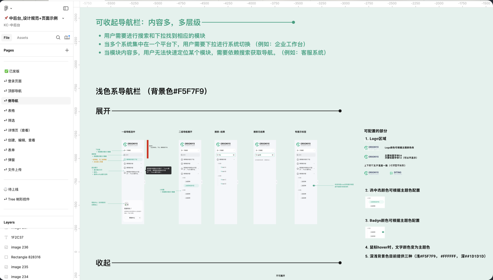

Hidden claim step
4 of 5 agentsBeforeClaim button: tiny, three screens in


AfterTake it, right in the reply box
Design lead · 3 designers · 5 platforms · design system

KuCoin set out to replace Zendesk, Ada and other third-party tools with in-house platforms. I led a team of 3 designers across all five platforms and a shared design system. When the most critical one, the agent workspace, left agents stuck, I stepped in to redesign it.
03 · Leading the programmeThird-party tools were costly and couldn't keep up with crypto-specific work. With a small team serving five user groups, my job was to decide who owned which platform, how much each MVP covered, and which shared rules kept quality even.







Everything else I led and reviewed. Screens captured in Chinese, as built for the internal teams.
Designer A, the strongest on visuals. Agents chat with customers here, so it shares many consumer-facing patterns.
Designer B, quick to grasp complex product logic and professional context, and to turn compliance rules into sound layouts and workflows.
Designer C, who joined for the later months after I asked the director for help when we were overloaded. C was keen on design systems, and that work needed no domain ramp-up.
Me, alongside reviewing the other four.
I scoped every MVP so all five platforms could go live at about the same time. Anything a platform didn't need on day one moved to a later iteration, including the shared empty, loading and error states, which arrived in the second.
Developers were overloaded and wanted simpler interactions; my test was whether the experience still held up for the people using it. We agreed to build the design system first, to settle patterns once and speed up development. The trade-off: UI details such as spacing and type were rough for a while, and caught up once components were synced in design and code.
Built on Ant Design, the system set more than button styles. It set the rules every platform followed, so an agent, a team lead and a compliance officer met the same behaviour wherever they worked. I reviewed every platform against these rules.
When a customer opens KuCoin Support, three platforms work behind the scenes. The agent workspace is where 200+ agents handle chats and tickets all day.

Customers
Where customers ask for help

Support agents
Where agents handle chats and tickets every day

Team leads
Sets routing rules, SLAs and metrics

Chatbot operators
Sets auto-replies, knowledge base and AI logic
Where support agents take chats and work tickets — the busiest of the five platforms in the programme.


Third-party tools were costly and inflexible for crypto support work.
Raise agent efficiency and experience, improve the customer-facing support experience, and replace the third-party stack.
Designer A owned the first UI; when agents couldn't use it before launch, I led the redesign with A and B in January 2025.
The first MVP was built under time pressure, before any agent had tried it. The screens were polished, but the flow was fragmented: in review, agents kept getting stuck, key actions were hidden and the screens didn't follow their workflow. That wasn't a way of working to change overnight. Compliance had just wrapped up, so I brought in designer B, the strongest on flow logic, and with two weeks to the development deadline took over the redesign with A and B.
With only two weeks, I started with observation rather than screens: 5 agents worked on the live MVP, 2–3 per session. We pinned every point of confusion to the screen, then grouped them into three structural blockers.

Three blockers explained almost all the friction. I scoped each to one focused change that fit the development deadline.
Set status to online and join the queue
No friction observed
Take an incoming chat or an unassigned ticket
Agents didn't know to take a ticket before replying
Check who the user is, their KYC level, any holds, and past tickets
User, ticket and history split across tabs
Translate, pick a macro, add an internal note
Most-used tools were the hardest to find
Submit as open, raise an admin ticket, or close and follow up
No friction observed
BeforeClaim button: tiny, three screens in
AfterTake it, right in the reply box
BeforeTwo tabs: user info, ticket info


AfterOne column: user, history, ticket
BeforeInternal notes: a tiny side-rail icon
AfterLabelled tools, right above the reply box
We chose collapsible sections: everything stays in one column, in the order agents read it, and they can fold away what they don't need.
Try it here: start at the sign-in screen and follow the redesign as one flow, from going online to replying with an AI suggestion, raising an admin ticket and closing the chat.
Interactive prototype built from the Figma file. Use the steps along the top to switch pages, or tap an empty spot to highlight the active areas. Open full screen ↗

Final workspace, after the interface was aligned with the upgraded design system.
08 · AI assistanceI set one rule for both AI features: tie them to the ticket in front of the agent, and leave what reaches the customer to the agent. The design followed the Ant Design AI guidelines and a review of competing support tools.

AI reply suggestionIn the chat, under the detected issue. The agent pastes it into the reply box to edit, or closes it.

AI summarySummary, emotion, sensitivity flag, category and a recommended reply, in the side panel.
Still open: agents could close or edit a suggestion, but not regenerate or flag it. I'd add both, so a poor suggestion becomes feedback rather than a dead end.
09 · ResultOver six months, the team delivered five platforms on one shared design system, and the redesigned agent workspace was ready for a 20-agent pilot. Before the pilot ran, the team was restructured and I moved to a customer-facing project, so there is no usage data.
The first pilot week, compared with the MVP, would set the baseline. The redesign stayed as the starting point for the workspace.
10 · ReflectionMatching by strength worked for compliance and the design system. On the agent workspace, a flow-heavy tool, strong visuals alone weren't enough. Next time I'd pair visual and flow skills on the busiest platform from the start.
Skipping early validation left the MVP out of step with how agents work, so it needed rework and cost development time. Watching real users is the fastest path to clarity.
Without a baseline, the redesign's value rests on review feedback. Next time I'd set time to first reply and claim errors before the MVP ships, so any redesign can be judged against them.